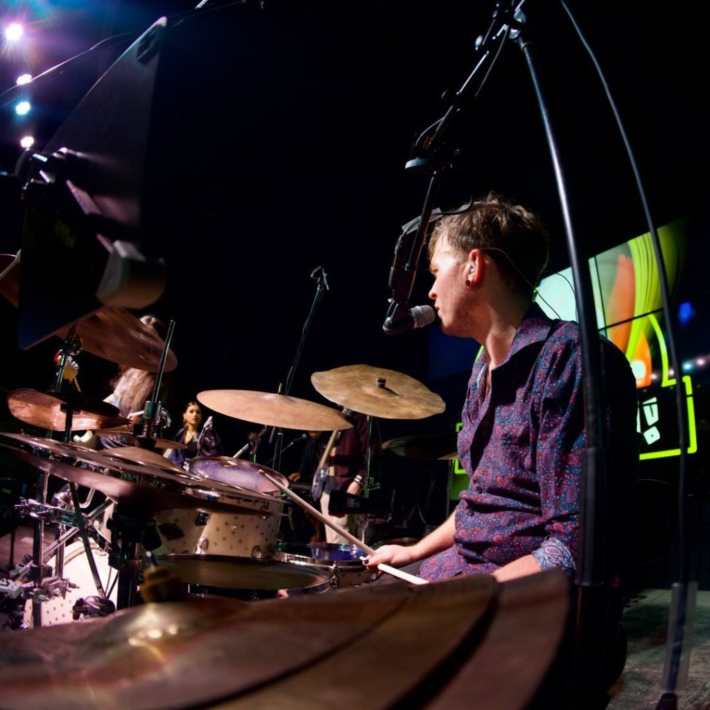

resume/cv
Jarrett Thompson
Statesboro, GA
jarrett@thejrummer.art

Experienced AV technician looking for opportunities to collaborate and create efficient solutions for current and future technological needs.
Education
Georgia Southern University, Statesboro, GA
May 2021 // M.M. Music Technology, GPA 4.0
Georgia Southern University, Statesboro, GA
May 2019 // B.M. Music Performance, GPA 3.35
Relevant Work Experience
Georgia Southern University
Audiovisual Systems Engineer/Executive IT Services
2025 - present
Worked with a team of AV engineers and IT specialists to manage installations for conferences, special events, and live broadcasts
Tended to the personal technical needs of the university president and his cabinet
Managed installations and events across 4 campuses (Statesboro, Savannah, Hinesville, and Swainsboro)
Maintained networked AV equipment that used protocols such as Dante and NDI
Worked with internal entities to fabricate AV installations that prioritized ease of use and utilized cutting-edge technology to maximize the scope and efficiency of event spaces
Coordinated with large-scale external entities such as ESPN, Hyundai, USG Board of Regents
Georgia Southern University
Audiovisual Coordinator
2023 - 2025
Hired, coordinated, and trained student employees on how to provide AV support
Managed maintenance, acquisition, and transportation of any and all AV equipment
Oversaw budgets for all AV related activities/equipment
Drafted estimates, invoices, and plans for AV installations and AV-centric events
Handled any and all audio, lighting, and rigging requirements for large scale events
Managed and drafted equipment rental agreements for external entities
Low Country Audio
Operations Manager / Technical Lead
2021 - 2023
Recruited, coordinated, and trained labor
Managed and maintained company inventory
Facilitated logistics and transportation of equipment and labor
Assisted with large-scale AV installations
Designed PA systems for large scale events to ensure maximum acoustic coverage and efficiency
Served as either front-of-house engineer, monitor engineer, lighting designer, technical director, or rigging engineer on any given production
Georgia Southern University
Graduate / Teaching Assistant
2019 - 2021
Managed and trained a crew of student employees
Maintained a recorded archive of all school-sponsored live performances
Live streamed school performances during the COVID-19 epidemic
Served as an aural skills tutor for remedial music students
Taught Aural Skills I and II both virtually (COVID-19) and in-person
Assisted with maintenance of department equipment and audio networks
Worked with award winning composers and international conferences to facilitate performances and meet artist/conference expectations
Blume Sound LLC
Co-Owner / Operator
2018 - 2023
Provided AV support and studio recording for local artists and venues
Installed and managed AV systems at several local establishments
Managed finances, client relations, and booking
Offered services such as mixing, mastering, video editing, and backline
Personally transported equipment to and from productions near and far
First Baptist Church - Statesboro
Drummer / AV Technician
2020 - Present
Performed weekly in-person and via livestream for thousands of concurrent viewers
Served as front of house engineer for Sunday morning worship service and auxiliary events
Provided insight and assisted with AV/IT related issues
Acted as playback engineer and regularly utilized digital audio workstations to provide click, guide, and backing tracks
Contemporary/Electroacoustic Composer
DAW / Computer / Live / Fixed Media
2020 - Present
Live and fixed media composition/performance
DAW integration for sound, cues, and processing
Integrated interactive visualization via projection and stage lighting
Crafted user friendly programs for use with live musical performances
Utilized machine learning processes in order to facilitate interactive performance practices
Spatialized pieces for playback on stereo, 4-channel, and 8-channel systems
Directed, composed, and participated in electronic music ensembles
Performed or composed pieces for notable electronic music showcases
Live Production Portfolio
Worked with national/international touring acts such as:
Nelly, The Revivalists, Andy Grammer, Andy Mckee, Cole Swindel, Father John Misty, Grand Funk Railroad, Colbie Caillat, The Head and the Heart, Collective Soul, Stephen Marley, Lukas Nelson, KT Tunstall, Bryce Leatherwood, Chris Destifano, Chris Isaak, Chris Barron, David Cook, David Nail, Dan Tyminski, Deana Carter, Drew Copeland, Easton Corbin, The Infamous Stringdusters, Jamey Johnson, Jason Bonham, Jason Scheff, Jimmy Vaughn, Joe Perra, Keller Williams, Kendall Street Company, Lettuce, The Lone Bellow, Amos Lee, Marc Broussard, Mark Bryan, Marty Stuart, Matt Kearney, Matt Warren, Mt. Joy, Paris Jackson, Phil Vassar, Preston Pohl, Railroad Earth, Ryan Cabrera, Ryan Adams, Ryan Stasik, Sara Evans, Steel Pulse, Thomas McClary, and Switchfoot
Technical Skills
Music Production Software: Cockos REAPER, Ableton, Pro Tools, Logic, Max/MSP, Supercollider, RME TotalMix, Musescore, Finale, Dante
Video Production Software: Adobe Premiere Pro, Cockos REAPER, Max/MSP, OBS, Adobe After Effects
Hardware: Behringer X32, Behringer Wing, Midas M32, Yamaha CL5, Yamaha QL5, Yamaha DM series, Yamaha TF series, Yamaha LS9, Presonus StudioLive 32, Focusrite Rednet, Allen & Heath SQ series, Soundcraft VI, Obsidian NX1, Obsidian NX Wing, Solid State Logic AWS 948, Focusrite Rednet interfaces, Universal Audio interfaces, RME interfaces
Misc. Software: Adobe Illustrator, Procreate, Obsidian Onyx, CAD, Google Suite, Microsoft 365, Event Management Services
Awards & Scholarships
Phi Kappa Lambda Honor Society (2021)
Lewis and Charlene Stuart Jazz Scholarship (2020, 2019, 2018)
Carol A. Carter Scholarship (2018)
Eagle Scout (2015)